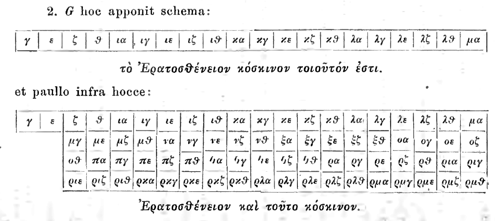
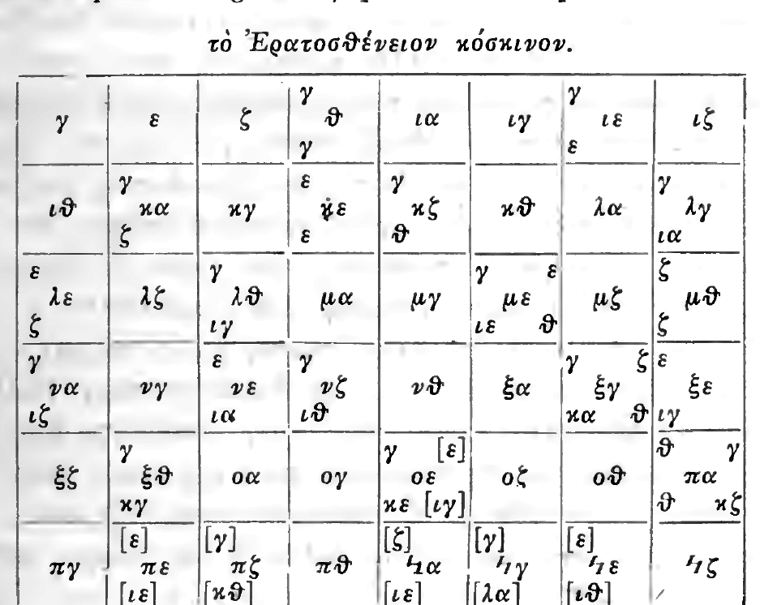

Chapter 13: Relatively Prime Numbers & the Sieve of Eratosthenes — Greek (Hoche 1866)¶
Ἀριθμητικὴ Εἰσαγωγή, Book I, Ch. 13 (ed. R. Hoche, Teubner, 1866)
ιγ. Ἀντικειμένων δὴ ἀλλήλοις τῶν δύο τούτων εἰδῶν
f. 0047 · p. 29τοῦ περισσοῦ τρίτον ἀνὰ μέσον τι θεωρεῖται οἱονεὶ ἐξ ἀμφοτέρων εἰδοποιούμενον τὸ καθʼ αὑτὸ μὲν δεύτερον καὶ σύνθετον, πρὸς ἄλλο δὲ πρῶτον καὶ ἀσύνθετον, ὅταν ἀριθμὸς πρὸς τῷ κοινῷ μέτρῳ τῇ μονάδι ἔτι καὶ ἑτέρῳ μετρεῖταί τινι μέτρῳ καὶ διὰ τοῦτο δυνάμενος καὶ ἑτερώνυμον μέρος ἢ μέρη ἐπιδέξασθαι πρὸς τῷ παρωνύμῳ, πρὸς ἄλλον τινὰ ὁμοίως ἔχοντα ἀντεξεταζόμενος εὑρίσκεται μήτε κοινῷ μέτρῳ μετρηθῆναι δυνάμενος πρὸς ἐκεῖνον, μήτε τὸ αὐτὸ ὁμώνυμον μέρος ἔχων τῶν ἁπλῶς ἐν ἐκείνῳ· οἷον ὁ θ πρὸς τὸν κε· ἑκάτερος γὰρ καθʼ ἑαυτὸν δεύτερός ἐστι καὶ σύνθετος, πρὸς δὲ ἀλλήλους μονάδι μόνῃ κοινῷ μέτρῳ χρῶνται καὶ οὐδὲν μόριον ὁμωνυμεῖ ἐν ἀμφοτέροις, ἀλλὰ τὸ ἐν τούτῳ τρίτον οὐκ ἔστιν ἐν ἐκείνῳ οὐδὲ τὸ ἐν ἐκείνῳ πέμπτον ἐν τούτῳ εὑρίσκεται.
Ἡ δὲ τούτων γένεσις ὑπὸ Ἐρατοσθένους καλεῖται κόσκινον, ἐπειδὴ ἀναπεφυρμένους τοὺς περισσοὺς λαβόντες καὶ ἀδιακρίτους ἐξ αὐτῶν τῇ τῆς γενέσεως μεθόδῳ ταύτῃ διαχωρίζομεν, ὡς διʼ ὀργάνου ἢ κοσκίνου τινὸς καὶ ἰδίᾳ μὲν τοὺς πρώτους καὶ ἀσυνθέτους, ἰδίᾳ δὲ τοὺς δευτέρους καὶ συνθέτριάδος
f. 0048 · p. 30

τους, χωρὶς δὲ τοὺς μικτοὺς εὑρίσκομεν. ἔστι δὲ ὁ τρόπος τοῦ κοσκίνου τοιοῦτος· ἐκθέμενος τοὺς ἀπὸ
f. 0049 · p. 31

πάντας ἐφεξῆς περισσοὺς ὡς δυνατὸν μάλιστα ἐπὶ μήκιστον στίχον, ἀρξάμενος ἀπὸ τοῦ πρώτου ἐπισκοπῶ, τίνας οἷός τέ ἐστι μετρεῖν, καὶ εὑρίσκω δυνατὸν ὄντα τοὺς δύο μέσους παραλείποντας μετρεῖν, μέχρις οὗ ἂν προχωρεῖν ἐθέλωμεν, οὐχ
f. 0050 · p. 32ὡς ἔτυχε δὲ καὶ εἰκῆ μετροῦντα, ἀλλὰ τὸν μὲν πρώτως κείμενον, τουτέστι τὸν δύο μέσους ὑπερβαίνοντα κατὰ τὴν τοῦ πρωτίστου ἐν τῷ στίχῳ κειμένου ποσότητα μετρήσει, τουτέστι κατὰ τὴν ἑαυτοῦ· τρὶς γὰρ· τὸν δʼ ἀπʼ ἐκείνου δύο διαλείποντα κατὰ τὴν τοῦ δευτέρου τεταγμένου· πεντάκις γάρ· τὸν δὲ περαιτέρω πάλιν δύο διαλείποντα κατὰ τὴν τοῦ τριτου τεταγμένου· ἑπτάκις γάρ· τὸν δὲ ἔτι περαιτέρω ὑπὲρ δύο κείμενον κατὰ τὴν τοῦ τετάρτου τεταγμένου· ἐνάκις γάρ· καὶ ἐπʼ ἄπειρον τῷ αὐτῷ τρόπῳ. εἶτα μετὰ τοῦτον ἀπʼ ἄλλης ἀρχῆς ἐπὶ τὸν δεύτερον ἐλθὼν σκοπῶ, τίνας οἷός τέ ἐστι μετρεῖν, καὶ εὑρίσκω πάντας τοὺς τετράδα διαλείποντας, ἀλλὰ τὸν μὲν πρῶτον κατὰ τὴν τοῦ ἐν τῷ στίχῳ πρώτου τεταγμένου ποσότητα· τρὶς γάρ· τὸν δὲ δεύτερον κατὰ τὴν τοῦ δευτέρου· πεντάκις γάρ· τὸν δὲ τρίτον κατὰ τὴν τοῦ τρίτου· ἑπτάκις γάρ· καὶ τοῦτο ἐφεξῆς ἀεί. πάλιν δὲ ἄνωθεν ὁ τρίτος ὁ ζ ὁ τὸ μέτρον παραλαβὼν μετρήσει τοὺς ἓξ διαλείποντας, ἀλλὰ τὸν μὲν πρώτιστον κατὰ τὴν τοῦ γ ποσότητα πρώτου κειμένου, τὸν δὲ δεύτερον κατὰ τὴν τοῦ ε· δευτεροταγὴς γὰρ οὗτος· τὸν δὲ τρίτον κατὰ τὴν τοῦ ζ· τρίτην γὰρ ἔχει καὶ οὗτος τάξιν ἐν τῷ στίχῳ. καὶ
f. 0051 · p. 33κατὰ τὴν αὐτὴν ἀναλογίαν διόλου ἀπαρεμπόδιστον προχωρήσει σοι τοῦτο, ὥςτε τὸ μὲν μετρεῖν διαδέξονται κατὰ τὴν ἐν τῷ στίχῳ αὐτῶν ἐγκειμένην τάξιν, τὸ δὲ πόσους διαλείποντας κατὰ τὴν ἀπὸ δυάδος ἐπʼ ἄπειρον εὔτακτον τῶν ἀρτίων προκοπὴν ἢ κατὰ τὴν τῆς χώρας διπλασίασιν, καθʼ ἣν ὁ μετρῶν τέτακται, τὸ δὲ ποσάκις κατὰ τὴν τῶν ἀπὸ τριάδος περισσῶν εὔτακτον προχώρησιν. ἐὰν οὖν σημείοις τισὶν ἐπιστίξῃς τοὺς ἀριθμούς, εὑρήσεις τοὺς μεταλαμβάνοντας τὸ μετρεῖν οὔτε ἅμα πάντας τὸν αὐτόν ποτε μετροῦντας, ἔστι δὲ ὅτε οὐδὲ δύο τὸν αὐτόν, οὔτε πάντας ἁπλῶς τοὺς ἐκκειμένους ὑποπίπτοντας μέτρῳ τινὶ αὐτῶν, ἀλλὰ τινὰς μὲν παντελῶς διαφεύγοντας τὸ μετρηθῆναι ὑφ᾿ οὑτινοςοῦν, τινὰς δὲ ὑπὸ ἑνὸς μόνου μετρουμένους, τινὰς δὲ ὑπὸ δύο ἢ καὶ πλειόνων. οἱ μὲν οὖν μηδαμῶς μετρηθέντες, ἀλλὰ διαφυγόντες τοῦτο πρῶτοί εἰσι καὶ ἀσύνθετοι, ὡς ὑπὸ κοσκίνου διακριθέντες, οἱ δὲ ὑπὸ ἑνὸς μόνου μετρηθέντες κατὰ τὴν ἑαυτῶν ποσότητα, ἓν μόνον μόριον ἑτερώνυμον ἕξουσι πρὸς τῷ παρωνύμῳ, οἱ δὲ ὑπὸ ἑνὸς μέν, ἑτέρου δὲ ποσότητι καὶ μὴ τῇ ἑαυτοῦ ἢ ὑπὸ δύο ὁμοῦ μετρηθέντες πλείονα ἔξουσι τὰ ἑτερώνυμα μέρη πρὸς τῷ παρωνύμῳ· οὗτοι οὖν ἔσονται δεύτεροι καὶ σύνθετοι. τὸ δὲ τρίτον μέρος τὸ κοινὸν
f. 0052 · p. 34ἀμφοτέρων, ὃ καθʼ ἑαυτὸ μὲν δεύτερον καὶ σύνθετον, πρὸς ἄλλο δὲ πρῶτον καὶ ἀσύνθετον, ἔσονται οἱ ἀποτελούμενοι ἀριθμοὶ κατὰ τὴν ἑαυτοῦ ποσότητα πρώτου καὶ ἀσυνθέτου μετρήσαντός τινος, εἴ τις γενόμενος συγκρίνοιτο πρὸς ἄλλον ὡςαύτως τὴν γένεσιν ἔχοντα· ὥςπερ ὁ θ (ἐγίνετο ἐκ τοῦ γ κατὰ τὴν ἑαυτοῦ ποσότητα μετρήσαντος, τρὶς γάρ), εἰ συγκρίνοιτο πρὸς τὸν κε (ἐγίνετο ἐκ τοῦ ε κατὰ τὴν ἑαυτοῦ ποσότητα μετρήσαντος, πεντάκις γάρ), κοινὸν μέτρον τούτοις οὐδέν, εἰ μὴ μονάς. ὡς δʼ ἂν καὶ μέθοδον ἔχοιμεν διαγνωστικὴν τῶν πρὸς ἀλλήλους ἤτοι πρώτων καὶ ἀσυνθέτων ἢ δευτέρων καὶ συνθέτων, ὅτι ἐκείνων μὲν κοινὸν μέτρον μονάς ἐστι, τούτων δὲ πρὸς τῇ μονάδι καὶ ἕτερός τις ἀριθμός, καὶ ποῖος οὗτος ὑπάρχει. εἰ ὁρισθείησαν ἡμῖν δύο περισσοὶ ἀριθμοί, προτείναντός τινος καὶ ἐπιτάξαντος διαγνῶναι, πότερον πρῶτοι πρὸς ἀλλήλους καὶ ἀσύνθετοί εἰσιν ἢ δεύτεροι καὶ σύνθετοι, καὶ εἰ δεύτεροι καὶ σύνθετοι, ποῖος ἀριθμὸς αὐτῶν κοινὸν μέτρον ἐστί, χρὴ ἀντισυγκρίνειν τοὺς προτεθέντας ἀριθμοὺς καὶ τὸν ἐλάττονα ἀπὸ τοῦ μείζονος ἀεὶ ἀφαιρεῖν, ὁσάκις δυνατόν, εἶτα τούτου ἀφαιρεθέντος ἀνταφαιρεῖν ἀπὸ τοῦ λοιποῦ, ὁσάκις πάλιν δυνατόν·
f. 0053 · p. 35ἡ γὰρ ἀντιπερίστασις αὕτη καὶ ἀνταφαίρεσις ἀναγκαίως ἤτοι ἐπὶ μονάδα καταλήξει ἢ ἐπί τινα ἕνα καὶ τὸν αὐτὸν ἀριθμόν, ἀναγκαίως δὲ περισσόν. ὅταν μὲν οὖν ἐπὶ μονάδα αἱ ἀφαιρέσεις περαιωθῶσι, πρώτους καὶ ἀσυνθέτους αὐτοὺς ἀποφαίνουσι πρὸς ἀλλήλους, ὅταν δὲ ἐπὶ ἕτερόν τινα ἀριθμὸν περισσὸν τῇ ποσότητι διφορούμενον, δευτέρους λέγε εἶναι πρὸς ἀλλήλους καὶ συνθέτους καὶ κοινὸν αὐτοῖς εἶναι μέτρον αὐτὸν ἐκεῖνον τὸν διφορούμενον ἀριθμόν· οἷον ἐὰν ὁ κγ προεβλήθη ἡμῖν καὶ ὁ με, ἄφελε τὸν κγ ἀπὸ τοῦ με, λειφθήσεται κβ· τοῦτον ἀνταφαιρῶν ἀπὸ τοῦ κγ, λοιπὴ μονάς· ταύτην ἀφαιρῶν ἀπὸ τοῦ κβ, ὁσάκις δυνατόν, εἰς μονάδα καταλήξεις· διὰ τοῦτο πρῶτοι καὶ ἀσύνθετοι πρὸς ἀλλήλους εἰσὶ καὶ κοινὸν αὐτῶν μέτρον ἡ ἀπολειφθεῖσα μονάς. εἰ δὲ ἑτέρους ἀριθμοὺς προθείη τις, τὸν κα καὶ τὸν μθ, ἀφαιρῶ τὸν ἐλάττονα ἀπὸ τοῦ μείζονος· λείπεται κη· εἶτα πάλιν ἐκ τούτου ἀφαιρῶ τὸν αὐτὸν κα (δυνατὸν γάρ), λείπεται ζ· ταῦτα ἀνταφαιρῶ ἀπὸ τοῦ κα, καταλείπεται ιδ· ἐξ ὧν πάλιν τὰ ζ ἀφαιρῶ (δυνατὸν γάρ), λειφθήσεται ζ, ἑβδομάδα δὲ ἀπο
f. 0054 · p. 36ἑβδομάδος οὐ δυνατόν ἀφαιρεθῆναι· ἡ ἄρα κατάληξις αὐτῶν εἰς διφορούμενον τὸν ζ ἐπεραιώθη, δευτέρους δὲ καὶ συνθέτους πρὸς ἀλλήλους ἀποφαίνου τοὺς ἐξ ἀρχῆς τὸν κα καὶ τὸν μθ καὶ κοινὸν αὐτῶν μέτρον πρὸς τῇ καθολικ μονάδι τὸν ζ.